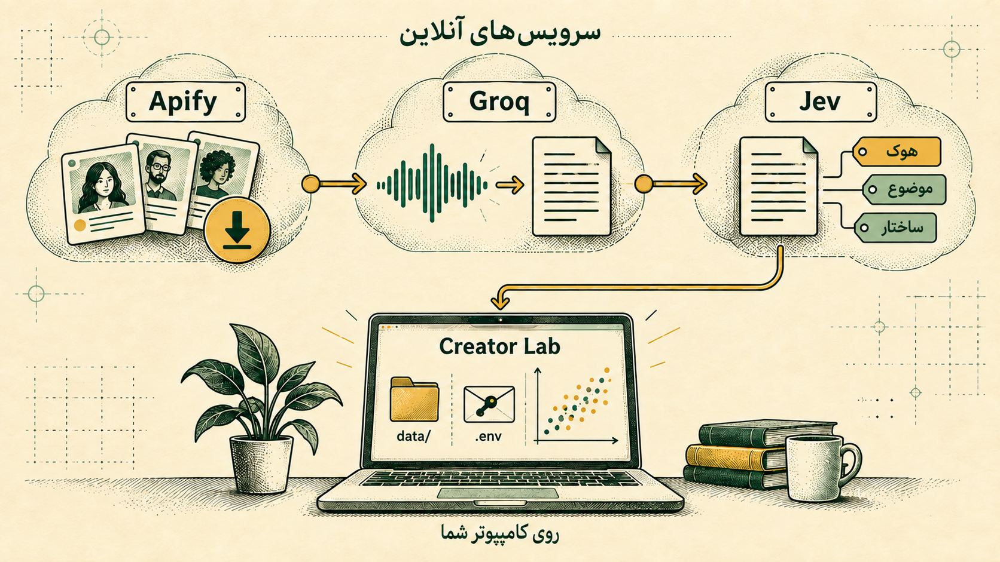
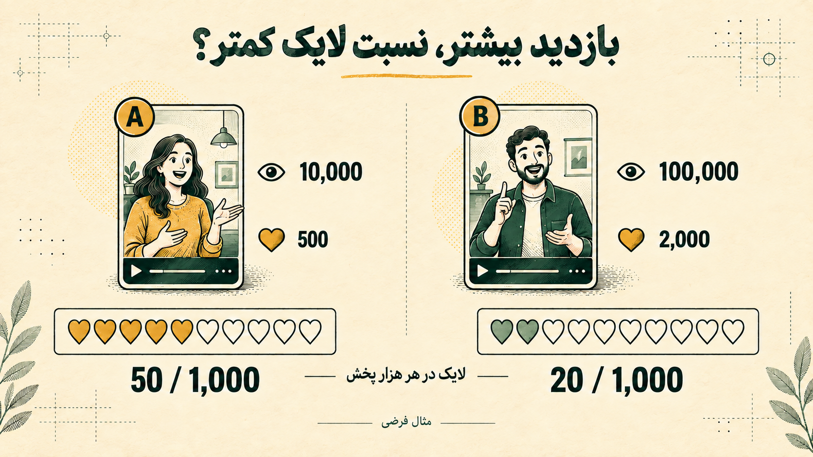
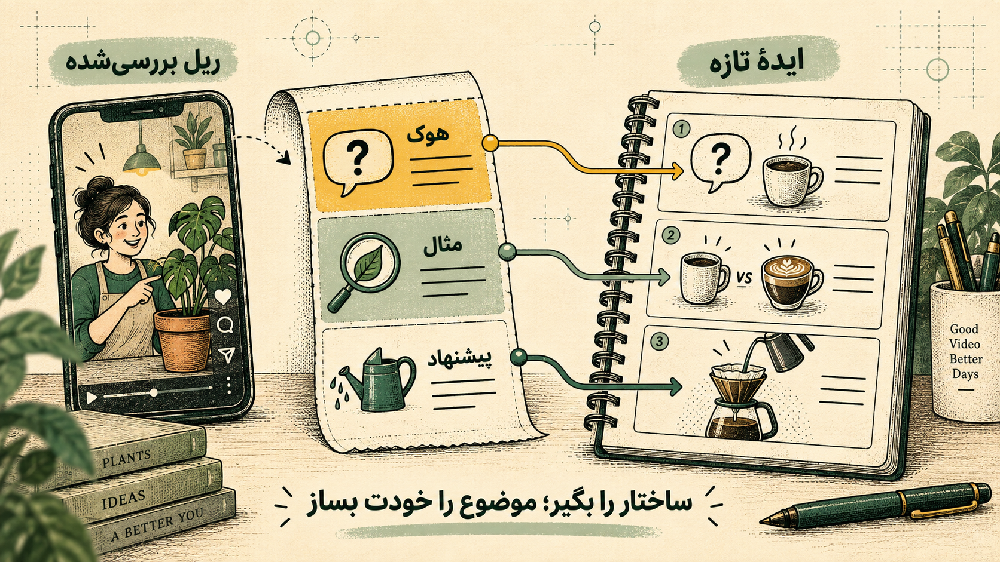

توی این راهنما
کریتور لب چیه؟نصب ابزارهادریافت برنامهسه کلید APIاولین اجرااولین تحلیلخواندن نتیجههامقایسهٔ پیجهاهزینه و دادههارفع مشکلاز تحلیل به ایدهریلی که جواب داده، چه الگویی داشته؟
برای پیدا کردن جواب، معمولاً باید ریلها را یکییکی ببینی، حرفهایشان را یادداشت کنی و آمارشان را کنار هم بگذاری. وقتی پای چند پیج وسط باشد، همین بررسی ساده چند ساعت وقت میگیرد.
کریتور لب بخشی از این کار را برایت انجام میدهد. آیدی یک پیج عمومی را میگیرد، گفتار ریلها را به متن تبدیل میکند و الگوهای متن را کنار آمار پخش، لایک و کامنت قرار میدهد. مثلاً میتوانی ببینی ریلهایی که با سؤال شروع شدهاند، نسبت به شروعهای مستقیم چه عملکردی داشتهاند.
نسخهٔ اصلی Creator Lab را Artem Novitckii با مجوز MIT ساخته است. طبق معرفی پروژه، نابولاینز رابط فارسی، تحلیل زنده و مقایسهٔ چند پیج را به نسخهٔ فارسی اضافه کرده است.

برنامهنویسی لازم نیست؛ اما باید چند ابزار نصب کنی و چند دستور را در خط فرمان اجرا کنی. «ترمینال» همان پنجرهای است که دستور را داخلش مینویسی و Enter میزنی.
قدم ۰۱ / آمادهکردن کامپیوترNode.js و FFmpeg را نصب کن
اول Node.js
از سایت رسمی Node.js نسخهٔ ۲۴ LTS مناسب ویندوز یا مک را دانلود و نصب کن. ابزار npm هم همراه آن نصب میشود.
در مک، Terminal را با Spotlight پیدا کن. در ویندوز، از Start برنامهٔ Command Prompt را باز کن. این دو دستور را جداگانه اجرا کن:
node --version
npm --versionاگر دو شمارهٔ نسخه دیدی، نصب انجام شده است؛ شمارهٔ Node باید با v24 شروع شود. اگر دستور شناخته نشد، پنجره را ببند و دوباره باز کن.
بعد FFmpeg؛ برای جداکردن صدا
اگر Homebrew داری، دستور زیر را اجرا کن. اگر نداری، ابتدا راهنمای نصب سایت رسمی Homebrew و بخش Next steps آن را دنبال کن تا دستور brew در ترمینال شناخته شود.
brew install ffmpegاز صفحهٔ رسمی FFmpeg به بخش Windows EXE Files برو و یکی از نسخههای آمادهٔ معرفیشده را بگیر. فایل Source Code برای این نصب مناسب نیست.
- فایل را از حالت فشرده خارج کن و پوشه را در محل ثابتی نگه دار.
- پوشهٔ bin را که فایل ffmpeg.exe داخل آن است پیدا کن و مسیرش را کپی کن.
- در Start عبارت Edit environment variables for your account را جستوجو کن.
- در متغیرهای کاربر، Path را انتخاب کن؛ Edit و بعد New را بزن و مسیر bin را اضافه کن.
- با OK ذخیره کن و Command Prompt را دوباره باز کن.
در هر دو سیستمعامل، نصب را با این دستور بررسی کن:
ffmpeg -versionنمایش اطلاعات نسخه یعنی FFmpeg آماده است.
قدم ۰۲ / فایلهای برنامهکریتور لب را آماده کن
git clone https://github.com/alisharafiiii/creator-lab.git هم بگیریاش.در صفحهٔ GitHub نسخهٔ فارسی، از Code → Download ZIP فایلها را بگیر و از حالت فشرده خارج کن. با این روش نیازی به نصب Git نداری. پوشهای را پیدا کن که فایل package.json داخل آن است.
- ویندوز: پوشه را در File Explorer باز کن. در نوار آدرس cmd بنویس و Enter بزن.
- مک: در Terminal عبارت
cdرا با یک فاصله بنویس، پوشه را داخل پنجره بکش و Enter بزن.
حالا داخل پوشهٔ پروژه این دستور را اجرا کن:
npm run setupطبق راهنمای پروژه، این دستور فایل تنظیمات .env را از روی نمونه میسازد و فایل موجود را بازنویسی نمیکند.
قدم ۰۳ / اتصال سرویسهاسه کلید؛ هرکدام برای یک کار
کلید API مثل رمز مخصوص اتصال برنامه به حساب توست. هر کلید را از حساب خودت میگیری و در فایل تنظیمات میگذاری.
| سرویس | مسیر گرفتن کلید | نام تنظیم |
|---|---|---|
| Apify جمعآوری ریل | کنسول Apify Settings → API & Integrations | APIFY_TOKEN |
| Groq تبدیل صدا به متن | صفحهٔ API Keys یک کلید جدید بساز | GROQ_API_KEY |
| TypeSafe / Jev دستهبندی متن | سایت TypeSafe ورود به کنسول و دریافت کلید | TYPESAFE_API_KEY |
دقت کن سرویس تبدیل صدا Groq است. وضعیت دسترسی و اعتبار حسابها را هم بررسی کن؛ داشتن کلید بهتنهایی به معنی اعتبار کافی نیست.
کلیدها را کجا بگذارم؟
فایل .env را در پوشهٔ پروژه با ویرایشگر متن ساده باز کن؛ Notepad در ویندوز یا TextEdit در حالت Plain Text در مک. اگر در Finder فایل را نمیبینی، با Command + Shift + . فایلهای مخفی را نمایش بده.
TRANSCRIPTION_PROVIDER=groq
APIFY_TOKEN=YOUR_APIFY_TOKEN
TYPESAFE_API_KEY=YOUR_TYPESAFE_KEY
GROQ_API_KEY=YOUR_GROQ_KEYمقدارهای YOUR_… را با کلید واقعی خودت جایگزین کن. اسم متغیرها و تنظیمات دیگر را نگه دار. فایل را دقیقاً با نام .env ذخیره کن، نه .env.txt.
آنها را داخل چت، اسکرینشات یا فایل عمومی نگذار. حساب سرویسها با همین کلیدها قابل استفاده است.
قدم ۰۴ / روشنکردن برنامهبررسی کن، بعد اجرا کن
npm run doctorطبق راهنمای پروژه، doctor وجود ابزارها و کلیدها را بررسی میکند و درخواست پولی نمیفرستد. این بررسی، اعتبار کلید یا موجودی حساب را تضمین نمیکند. موارد گزارششده را برطرف کن و بعد اجرا کن:
npm startمرورگر را باز کن و آدرس زیر را در نوار آدرس بنویس:
http://127.0.0.1:5190این آدرس به کامپیوتر خودت اشاره دارد. ترمینال باید باز بماند و برنامه در حال اجرا باشد. طبق مستندات پروژه، بدون کلید هم حالت نمایشی باز میشود؛ دادههای آن ساختگیاند.
برای دفعات بعد نصب را تکرار نمیکنی؛ وارد پوشهٔ پروژه شو و npm start را اجرا کن.
اولین تحلیل؛ یک پیج، ۲۰ ریل
یک پیج عمومی انتخاب کن که در ریلهایش صحبت میشود. ویدیوهای صرفاً موسیقی و نوشته، برای تحلیل گفتار انتخاب مناسبی نیستند.
- روی «تحلیل جدید» بزن و آیدی پیج را بدون @ وارد کن.
- تعداد ریلها را برای شروع روی ۲۰ بگذار.
- سقف هزینهٔ Apify را مشخص کن؛ این سقف، مجموع هزینهٔ همهٔ سرویسها نیست.
- زبان گفتار را روی فارسی بگذار.
- روی «بزن بریم» بزن.
در صفحهٔ تحلیل زنده، جمعآوری ریل، تبدیل گفتار به متن و دستهبندی را میبینی. ریلهای آماده روی نمودار ظاهر میشوند. تمامشدن جمعآوری به معنی تمامشدن تحلیل نیست؛ مراحل بعدی هم باید کامل شوند.
عددها چه چیزی به تو میگویند؟
هر نقطه روی نقشهٔ عملکرد، یک ریل است. حرکت به سمت راست یعنی پخش بیشتر؛ بالاتر بودن یعنی لایک بیشتر بهازای هر هزار پخش. رنگها نوع هوک را نشان میدهند.
هوک همان شروعی است که قرار است مخاطب را نگه دارد؛ یک سؤال، نتیجهٔ غیرمنتظره یا اشاره به اشتباهی رایج.

بسته به اینکه دنبال دیدهشدن باشی یا واکنش مخاطب، هرکدام از این عددها به کارت میآیند. نسبت لایک به پخش دربارهٔ فروش، ذخیرهکردن یا تعداد مخاطبان منحصربهفرد چیزی نمیگوید.
روی یک ریل بزن تا جملهٔ اول، متن کامل، زمانبندی و بخشبندی اسکریپت را ببینی. مدل تلاش میکند بخشهایی مثل هوک، مثال، توصیه و فراخوان پایانی را تشخیص بدهد. درصد اطمینان، تضمین درستی برچسب نیست.
در جدول الگوها، چند ریل مشابه را با هم بررسی کن. «میانه» عدد وسط دادههای مرتبشده است و معمولاً از یک ریل خیلی پربازدید کمتر اثر میگیرد. هشدار «نمونهٔ کوچک» را جدی بگیر؛ یک ویدیوی موفق برای اثبات برتری یک سبک کافی نیست.
پیج خودت را کنار رقبا ببین
بعد از تحلیل چند پیج، وارد «مقایسهٔ پیجها» شو. در نسخهٔ معرفیشده، دو تا پنج پیج را کنار هم میگذاری و مشخص میکنی کدام «پیج من» است.
مقایسه بر اساس عملکرد معمول هر پیج انجام میشود. مثلاً «این الگو برای همان پیج بهتر از معمول جواب داده» از مقایسهٔ خام بازدید یک پیج بزرگ و کوچک مفیدتر است. تفاوت مخاطب، موضوع و شرایط انتشار همچنان اثر دارد.
ریلهای پشت هر پیشنهاد را هم ببین. این پیشنهادها نقطهٔ شروع بررسیاند. مقایسهٔ دادههای ذخیرهشده درخواست API تازهای ندارد.
هزینه چقدر است؛ دادهها کجا میروند؟
در اجراهای آزمایشی پروژه، هزینهٔ دو اجرای برای ۲۰ ریل حدود ۰٫۰۵ و ۰٫۰۶ دلار گزارش شده است. این عددها مربوط به همان نمونهها هستند؛ هزینهٔ تو به طول گفتار، تعداد ریل، اعتبار و تعرفهٔ سرویسها بستگی دارد.
با ۲۰ ریل شروع کن، مصرف حسابها را ببین و بعد تعداد را بیشتر کن. این تعداد برای آشنایی است؛ برای تصمیم محتوایی، تعداد ریلهای قابلتحلیل در هر الگو هم مهم است.
طبق معرفی پروژه، دادهها در پوشهٔ data/ روی کامپیوتر میمانند. اما تحلیل آفلاین نیست: Apify اطلاعات پیج را دریافت میکند، صدا به Groq و متن به TypeSafe ارسال میشود.
اگر جایی گیر کردی
| مشکل | از اینجا شروع کن |
|---|---|
| node یا npm پیدا نمیشود | نصب Node.js را بررسی و خط فرمان را دوباره باز کن. |
| ffmpeg پیدا نمیشود | نصب و مسیر bin در Path را بررسی کن. |
| package.json پیدا نمیشود | دستور را داخل پوشهٔ اصلی پروژه اجرا کن. |
| صفحه باز نمیشود | npm start باید در حال اجرا باشد؛ آدرس و پیام ترمینال را بررسی کن. |
| فقط دادهٔ نمایشی هست | نام .env و کلیدها را بررسی و برنامه را دوباره اجرا کن. |
| تعداد ریلها کمتر است | ممکن است بعضی ریلها گفتار نداشته باشند یا جمعآوری کامل نباشد. |
| متن فارسی اشتباه است | زبان را فارسی انتخاب و متن را با صدای اصلی تطبیق بده. |
خطای EADDRINUSE یعنی پورت اشغال است؛ شاید اجرای قبلی برنامه باز مانده باشد. طبق راهنمای پروژه، این دو دستور را به ترتیب اجرا کن:
npm run stop
npm startاز نتیجهٔ تحلیل، یک آزمایش بساز
فرض کن پیج آموزشی داری و چند ریل که با «اشتباه رایج» شروع شدهاند، واکنش بهتری گرفتهاند. آنها را باز میکنی و میبینی علاوه بر شروع مشابه، همه یک مثال روشن هم داشتهاند.
حالا یک فرضیه داری: «شاید اشاره به یک اشتباه مشخص، همراه با مثال، برای مخاطب من مفیدتر باشد.» چند محتوا با این ساختار بساز و نتیجه را بررسی کن.

برای مدیر پیج، این تحلیل میتواند مبنای جلسهٔ برنامهریزی باشد: کدام موضوعها بیشتر امتحان شدهاند و چه ساختاری ارزش آزمایش دارد؟ برای آژانس هم مرور محتوای مشتری و رقبا را سریعتر میکند؛ تحلیل اولیه آماده است و موارد مهم را خودت بازبینی میکنی.
نسخهٔ فعلی روی گفتار تمرکز دارد و تصویر، تدوین و نوشتههای روی ویدیو را در این تحلیل پوشش نمیدهد. رونویسی و برچسبها ممکن است اشتباه کنند. نمونهٔ بیشتر کمک میکند، اما حتی ۳۰ ریل هم نتیجه را قطعی نمیکند. پوشش کامل آرشیو پیج هم تضمین نیست.
موفق بودن یک هوک ثابت نمیکند همان هوک علت موفقیت بوده است. موضوع، زمان انتشار، تبلیغ و عوامل دیگر هم میتوانند اثر داشته باشند.
تمرین اول تو
یک پیج، ۲۰ ریل و یک سؤال مشخص: «کدام نوع شروع ارزش دارد در سه ویدیوی بعدی امتحانش کنم؟» چند نمونه را دقیق ببین، یک الگو انتخاب کن و نتیجهٔ آزمایش خودت را بسنج.
منابع و مبنای این راهنما
کد نسخهٔ فارسی کریتور لب در GitHub ↗نسخهٔ اصلی Creator Lab ↗دانلود رسمی Node.js ↗دانلود رسمی FFmpeg ↗راهنمای کلید API در Apify ↗شروع کار با Groq ↗مستندات TypeSafe و Jev ↗قابلیتهای نسخهٔ فارسی و هزینههای نمونه بر اساس مستندات و اجراهای آزمایشی پروژه توصیف شدهاند. تصاویر آموزشیاند و اسکرینشات برنامه نیستند.